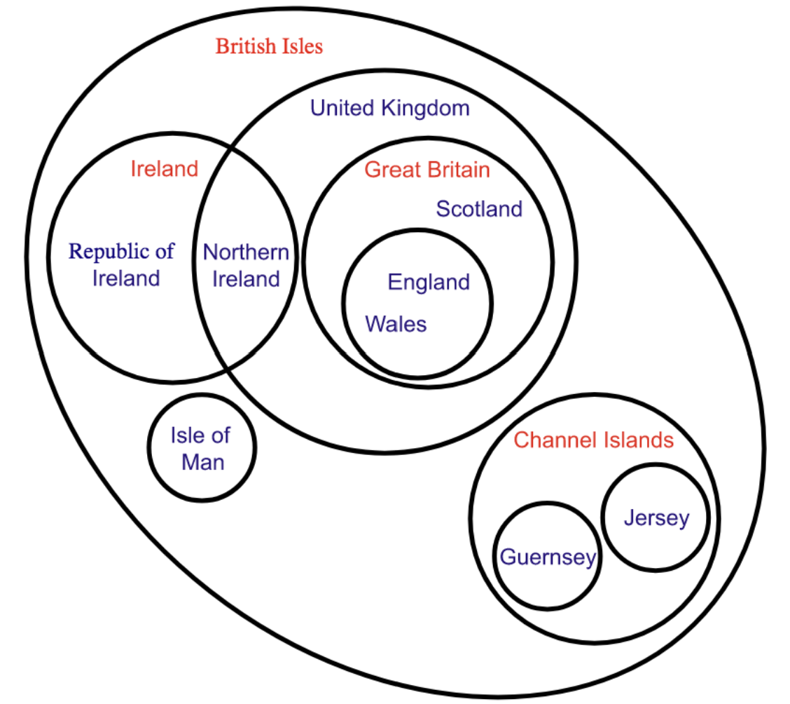
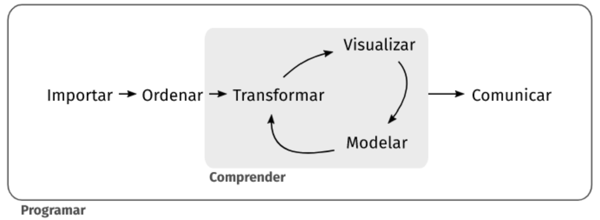
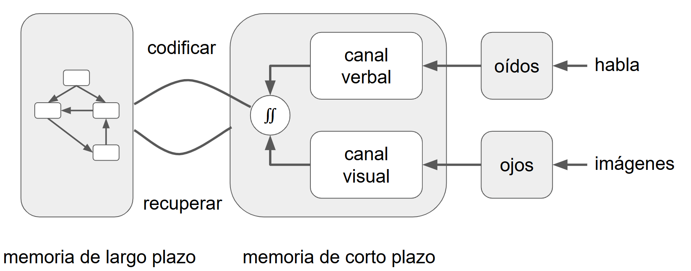

Content from Introducción
Última actualización: 2025-07-22 | Mejora esta página
Hoja de ruta
Preguntas
- ¿Que vamos a aprender?
- ¿A quién estamos tratando de ayudar?
Objetivos
- Explicar sobre el entrenamiento, los objetivos y motivaciones.
- Demostrar cómo describir a las personas que se está tratando de ayudar.
Entrenamiento docente
Les damos la bienvenida al entrenamiento docente adaptado por MetaDocencia, una versión creada a partir del curso “Train the Trainers” de The Carpentries.
Este curso brindará a los nuevos capacitadores conocimientos, habilidades, orientación y consejos para desarrollar y brindar capacitación. Los participantes explorarán una variedad de métodos para permitir y fomentar el aprendizaje, examinar los requisitos para un curso exitoso y obtener apropiada devolución
Objetivos:
- Brindar orientación sobre técnicas de capacitación general y el uso apropiado de métodos basados en las necesidades del alumno, incluidos algunos “DOs” y “DONT’s” generales para una capacitación exitosa.
- Proporcionar un marco para un diseño curricular exitoso y un mayor desarrollo, para permitir a los capacitadores construir un curso apropiado para las necesidades de sus alumnos.
Motivación
- Construir lecciones más efectivas
- Aplicando prácticas basadas en evidencia
- Con práctica y retroalimentación
- En un ambiente de aprendizaje positivo
Sabemos tanto sobre la enseñanza y el aprendizaje como sabemos sobre salud pública. El problema es que la mayoría de las personas en tecnología (y la mayoría de las/os docentes universitarios) no saben lo que sabemos. Cuando terminaste la escuela secundaria, probablemente sabías qué son los gérmenes y las vitaminas y de dónde vienen los bebés. Probablemente no conozcas hechos igualmente básicos sobre cómo aprenden las personas o cuál es la mejor manera de enseñarles.
Conocer unos pocos de estos conceptos básicos te ayudará a construir lecciones más efectivas en menos tiempo y con menos esfuerzo. A enseñar también se aprende, sobre todo a través de la práctica y la retroalimentación que recibimos de quienes están en nuestras clases.
Punto de Partida
Nuestra idea clave es que el aprendizaje es tanto una actividad cognitiva como social. El aprendizaje ocurre cuando tu cerebro almacena hechos y procedimientos de manera que le permiten recordar y aplicar lo que necesita cuando lo necesita. También ocurre en un entorno social: se aprende por determinada razón, con otras personas, y tus objetivos, motivaciones y criterios para el éxito se determinan con esas y por esas personas. Otra de nuestras ideas clave es que tanto la enseñanza como el aprendizaje deben ser activos: una persona que recita una lección a sus estudiantes que simplemente escuchan es probablemente menos efectiva que una lección donde los estudiantes participan.
Paramédicas y Paramédicos Educacionales
Otra cosa que debemos dejar en claro es que no estamos tratando de convertirte en un experto en educación, no queremos convertirte en médica o médico. Somos más como paramédicas y paramédicos educacionales: nos enfocamos en brindar un servicio de respuesta primaria a las personas que necesitan ayuda inmediata y que pueden no tener tiempo o interés para completar todo lo que hay para saber sobre un tema. Ninguno de los dos aspectos es mejor que el otro: sirven a diferentes propósitos.
El público en general tiene conocimientos básicos de salud y medicina, pero no tiene los conocimientos equivalentes sobre enseñanza y aprendizaje. Una persona entrenada posee los dos. Nosotros éramos como vos en este momento, pertenecíamos a ese grupo de gente sin entrenamiento en conceptos básicos de educación, pero ahora somos personas entrenadas y es en lo que vas a convertirte cuando termines este curso. Una persona entrenada puede: crear mejores lecciones, usar prácticas basadas en evidencia, mejorar usando retroalimentación y generar un ambiente de aprendizaje positivo. La enseñanza y aprendizaje involucra procesos cognitivos y sociales, y se realizan mejor si se hacen de manera activa.
Personas
El primer paso para crear cualquier clase de lección es descubrir a quién estás tratando de ayudar. Hacer esto también es una buena herramienta para romper el hielo, así que voy a presentarles a Ana.
Conoce a Ana:
Sus Antecedentes
Estos son los antecedentes de Ana: solo algunos datos que ayudan a personalizarla.
- Nacida y criada en Caracas
- Se mudó a Buenos Aires para hacer un doctorado en genética
- Le gusta el mate, pero aún no se acostumbra a tomarlo amargo
Punto de Partida
Aquí está Ana en este momento. No es una lista de palabras clave, porque una frase como “conocimiento básico de un lenguaje de programación” significa cosas muy diferentes para diferentes personas. En cambio, está escrito como una descripción de una persona en particular, y confiamos en que quien lee interpolará toda la información que no está allí.
- Analiza datos con Excel desde hace casi diez años
- Hizo un taller de un día intensivo de R en una conferencia
- Intentó aprender Git por su cuenta una vez, lo encontró frustrante
Necesidades
Esto es lo que Ana piensa que quiere aprender. Lo más importante de esta lista es que está escrita desde su punto de vista: no es lo que tu, con más conocimiento del tema, sabes que necesita; es lo que ella, con el conocimiento que tiene ahora, está buscando.
- Va a hacer 300 experimentos en los próximos seis meses
- No quiere hacer todos los análisis a mano
- Quiere mejores tablas para su tesis que las que puede hacer en Excel
Consideraciones Especiales
La parte final de tus estudiantes tipo describe cualquier otra cosa que deba tenerse en cuenta. ¿Tienen problemas de audición? ¿Necesitan terminar a las 6:00 pm puntual porque cuidan menores o personas mayores? ¿Van a usar una máquina bloqueada que no les permitirá instalar software? Cualquiera de estas cosas podría desviar tu enseñanza, por lo que es mejor pensar en ellas por adelantado.
- Muy incómoda hablando delante de un grupo
Preguntas para contestar en el chat
¿Qué te imaginas? ¿Ana usa redes sociales?
- Si piensas que sí, ¿qué red usa?
- Si piensas que no, ¿por qué no?
Contesta brevemente en el chat.
Estudiante o Persona Tipo
Podés incluir figuras generadas desde R Markdown:
Lo que acabamos de crear se llama estudiante tipo. Cualquiera que enseñe, o cualquier equipo que enseñe junto, debería crear un puñado de estudiantes tipo que describan a las personas que se está tratando de ayudar. Estos casos típicos te recordarán una de las reglas más importantes para enseñar: no eres tu estudiante.
- Antecedentes generales
- Experiencia relevante
- Necesidades percibidas
- Consideraciones especiales
Explícalo En Sus Términos
Una vez que sabes a quién estás tratando de ayudar, puedes descubrir cómo tu capacitación les ayudará a satisfacer sus necesidades y cómo explicarlo de una manera que te puedan entender. Es una única línea en el catálogo de muchos otros cursos lo que llamará la atención de quienes se formen contigo y que les ayudará a determinar si les puedes ayudar.
“Esta introducción práctica de una semana a la ciencia de datos mostrará cómo cargar, limpiar, explorar, visualizar y analizar datos tabulares en forma reproducible.”
Personas Tipo de MetaDocencia
Juan Pablo | Experto tecnológico; piensa que sus clases son inmejorables |
Karina | Usuaria inicial de tecnología con estudios de pedagogía universitaria |
Emilia | Bibliotecaria y ahora diseñadora web en una pequeña empresa |
Samira | Programadora profesional, quiere dar clases pero no tiene experiencia |
David | Estudiante de robótica, le gustaría ser docente |
Gerardo | Docente de ciencias de la computación, quiere mejorar sus clases |
Más detalles en https://www.metadocencia.org/personas/ y https://teachtogether.tech/es/index.html#s:intro-audience
Ejercicio: crea una persona tipo
- Antecedentes generales
- Punto de partida
- Necesidades
- Consideraciones especiales
Explica cómo puedes ayudarla.
Puntos Clave
- A enseñar se aprende de manera activa
- Las personas o estudiantes tipo describen a quienes se está tratando de ayudar
Content from Modelos mentales
Última actualización: 2025-07-22 | Mejora esta página
Hoja de ruta
Preguntas
- ¿Cómo aprenden las personas?
- ¿Cómo ayudar a personas novatas?
Objetivos
- Explicar e identificar los modelos mentales de personas novatas,
competentes y expertas
- Demostrar cómo ayudar a construir nuevos modelos mentales
- Comprender la progresión cognitiva para aplicar recursos eficientes en tus lecciones
Progresión Cognitiva
A partir de la década del 80, Patricia Benner comenzó a estudiar la forma en que las personas que practican la enfermería pasan de ser novatas a expertas. Lo que encontró, y lo se ha replicado al observar otros grupos, es que la mayoría de las personas pasan por una serie bastante predecible de transiciones cognitivas. No solo acumulan más conocimiento: en realidad comienzan a pensar en los problemas de maneras muy diferentes. Cuando digo que la mayoría de las personas, la mayor parte del tiempo, eso se debe a que siempre hay una distribución, pero esta progresión es bastante predecible para la mayoría de las personas adultas neurotípicas.
Benner identificó cinco etapas:
- Persona novata
- Principiante avanzada
- Competente
- Competente avanzada
- Persona experta
Pero para nuestros propósitos, vamos a simplificar el modelo a tres:
- Persona novata
Principiante avanzada- Competente
Competente avanzada- Persona experta
Ejercicio: ¿Cuáles son los síntomas de que una persona es novata?
Tómate un par de minutos y escribe en el documento compartido algunos síntomas de que alguien es una persona novata. No te preocupes aún por el “por qué”; en cambio, enumera las cosas que hacen o dicen que te llevan a clasificarlas como un cocinero novato, un conductor novato, una oradora novata del esperanto o una programadora novata.
Personas novatas
Aquí hay algunas respuestas comunes a la pregunta ¿Cuáles son los síntomas de que una persona es novata?.
- Hacen las cosas de memoria
- Hacen preguntas sin sentido
- Usan términos incorrectos
- No diferencian qué es relevante
- Les falta confianza
Antes de explorar lo que tienen en común, necesitamos eliminar una.
- Hacen las cosas de memoria
- Hacen preguntas sin sentido
- Usan términos incorrectos
- No diferencian qué es relevante
Les falta confianza
Algunos de los síntomas de ser una persona novata son que haces las cosas de memoria: tienes una receta que sigues pero no entiendes el por qué esos pasos, por qué están en ese orden o qué hacer si algo sale mal.
Los novatos a menudo hacen preguntas sin sentido como, “¿De qué color es la base de datos?”
Un tercer síntoma es que los novatos con frecuencia no pueden decir qué es relevante y qué no lo es; es muy común, por ejemplo, ver a las personas programadoras novatas poner sus propios nombres de variables o nombres de archivos en consultas en un sitio como Stack Overflow. Todavía tienen una clara distinción en sus cabezas entre lo que pertenece al lenguaje y lo que es específico de su programa.
Una cosa que no es un síntoma confiable de ser una persona novata es la confianza o la falta de confianza. Esto se debe a algo llamado efecto Dunning-Kruger: cuanto menos sepa sobre un tema, menos precisa será tu estimación de cuánto sabes y cuánto no sabes.
![El gráfico muestra una curva amarilla que representa el efecto Dunning-Kruger: en el eje horizontal se indica el “Conocimiento del área”, de poco a mucho, y en el vertical la “Confianza”, de poca a mucha. La línea empieza en el extremo inferior izquierdo con un punto etiquetado “¿Eh?”, asciende rápidamente hasta un pico llamado “Ya sé todo”, desciende atravesando “Esto es más de lo que pensaba” y toca fondo en “Nunca voy a entender esto”; a partir de allí sube gradualmente pasando por “Empieza a tener sentido” y llega al extremo superior derecho en “Créeme, es complicado”. Cada fase está marcada con un punto rojo que señala cómo la confianza varía a medida que crece el conocimiento.](fig/efecto-Dunning-Kruger.png)
Características de una Persona Novata
Lo que hace a alguien una persona novata es que aún no tiene un modelo mental del problema: no sabe cuáles son las piezas importantes o cómo se relacionan. Por lo tanto, tienen que seguir pasos sin comprender por qué, o tomar prestados conceptos de otros dominios que entienden y esperar que se mantengan las analogías.
Un modelo mental
Aquí hay un ejemplo de lo que queremos decir con un modelo mental.
En la clase de ciencias de la escuela secundaria, probablemente te enseñaron que los átomos son bolas de colores brillantes conectadas por resortes.
Ninguna de esas cosas es realmente cierta, pero es un modelo útil para comprender las cosas que las personas quieren entender en esa etapa de su desarrollo y para resolver los problemas que quieren resolver.
Otro modelo mental puede ser:
Una computadora tiene una CPU, algo de RAM y un disco duro.
Es realmente útil para explicar el rendimiento de la computadora a principiantes, pero de nuevo, todo esto es falso. Tu computadora probablemente tenga varios procesadores, hay al menos tres niveles de memoria y su disco duro probablemente no sea una única unidad. Sin embargo, nada de eso es importante para la mayoría de quienes programan. El modelo les permite hacer predicciones sobre las que pueden actuar y arreglar las cosas que salen mal.
Cómo Ayudar Personas Novatas
Ayúdalas a construir un modelo mental
Hasta que alguien tiene un modelo mental, no tiene dónde poner información y no puede decir qué partes son útiles y cuándo son útiles. Por lo tanto, tu objetivo al enseñarle a principiantes es ayudarles a construir un modelo mental.
Por ejemplo, la introducción de Software Carpentry al shell de Unix cubre 15 comandos en 3 horas. Es solo un comando cada 12 minutos. Esto suena a un ritmo muy lento hasta que te das cuenta de que el objetivo es realmente ayudarlos a comprender:
- ¿Qué es un camino (path)?
- ¿Cuál es la diferencia entre una ruta absoluta y una ruta relativa?
- ¿Qué es un directorio de inicio?
- ¿Qué son las flags de un comando?
- ¿Qué es un pipe?
- ¿Qué es el historial y cómo se usa?
- ¿Qué es un comodín?
Hasta que tu audiencia sepa esto, nada más tendrá sentido.
Cómo Sabes que tu Trabajo Fue Exitoso
Puedes saber cuando las personas tienen un modelo mental utilizable cuando pueden leer el manual o, en estos días, cuando pueden escribir la búsqueda correcta en su navegador y reconocer una respuesta útil cuando aparece.
Mapas mentales
Entonces, ¿cómo haces esto? El primer paso para cualquier lección es descubrir qué modelo mental quieres que tengan, y la mejor manera de hacerlo es dibujar un mapa conceptual.
Por ejemplo podemos analizar el mapa mental de una usuaria de una biblioteca (según lo dibujado por Amy Hodge de la Universidad de Stanford).

Y aquí está el modelo mental para la dirección de la biblioteca:
 {alt=“Mapa
conceptual sobre la dirección de una biblioteca: el ‘Gobierno de la
ciudad’ ‘controla’ y ‘paga por’ el ‘Presupuesto’; este ‘paga por’
‘Programas y materiales’, ‘Personal’ e ‘Instalaciones’. El personal
‘trabaja en’ las instalaciones y está ‘gobernado por’ ‘Sindicatos’. Las
‘Socias/os’ ‘visitan’ las instalaciones y ‘participan en’ los programas,
que ‘ocurren en’ dichas instalaciones.”}
{alt=“Mapa
conceptual sobre la dirección de una biblioteca: el ‘Gobierno de la
ciudad’ ‘controla’ y ‘paga por’ el ‘Presupuesto’; este ‘paga por’
‘Programas y materiales’, ‘Personal’ e ‘Instalaciones’. El personal
‘trabaja en’ las instalaciones y está ‘gobernado por’ ‘Sindicatos’. Las
‘Socias/os’ ‘visitan’ las instalaciones y ‘participan en’ los programas,
que ‘ocurren en’ dichas instalaciones.”}
Aquí hay un mapa conceptual que muestra nuestro modelo mental de los mapas conceptuales.
 {alt=“Diagrama
meta-conceptual: un ‘mapa conceptual’ ‘representa’ un ‘modelo mental’,
‘contiene’ ‘nodos (conceptos)’ y ‘enlaces (relaciones)’, los cuales
‘habilitan recordar’. El mapa conceptual también ‘ayuda a diseñar’ una
‘lección’, que a su vez ‘sigue’ los enlaces.”}
{alt=“Diagrama
meta-conceptual: un ‘mapa conceptual’ ‘representa’ un ‘modelo mental’,
‘contiene’ ‘nodos (conceptos)’ y ‘enlaces (relaciones)’, los cuales
‘habilitan recordar’. El mapa conceptual también ‘ayuda a diseñar’ una
‘lección’, que a su vez ‘sigue’ los enlaces.”}
Hay muchas formas de dibujar el modelo mental de alguien. Este se parece más a un árbol de decisión …
Mapa conceptual: una manzana puede ser roja (está madura), amarilla (está madura), verde, está inmadura, a menos que sea Granny Smith y entonces puede estar madura.
 {alt=“Mapa conceptual que
parte del nodo ‘manzana’ con la relación ‘puede ser’ hacia tres colores:
‘roja’, ‘amarilla’ y ‘verde’. De ‘roja’ y ‘amarilla’ sale la relación
‘está’ hacia ‘madura’; de ‘verde’ hacia ‘inmadura’. Otro camino señala
que una manzana ‘puede estar’ madura ‘a menos que sea’ ‘Granny Smith’,
conectando ese cultivar como excepción.”}
{alt=“Mapa conceptual que
parte del nodo ‘manzana’ con la relación ‘puede ser’ hacia tres colores:
‘roja’, ‘amarilla’ y ‘verde’. De ‘roja’ y ‘amarilla’ sale la relación
‘está’ hacia ‘madura’; de ‘verde’ hacia ‘inmadura’. Otro camino señala
que una manzana ‘puede estar’ madura ‘a menos que sea’ ‘Granny Smith’,
conectando ese cultivar como excepción.”}
Alternativas
… y, a veces, un diagrama o diagrama de Venn es más preciso. Lo que hacen los mapas conceptuales que la mayoría de los otros esquemas no hacen es etiquetar las relaciones. Esos enlaces son cómo pasamos del conocimiento que tenemos al conocimiento que necesitamos. Si no le dices a tus estudiantes cómo están conectados dos hechos, probablemente no podrán recordarlos.
{alt=“Diagrama de Venn con círculos anidados que aclaran la geografía política de las islas británicas: el contorno mayor es ‘British Isles’; dentro, círculos para ‘United Kingdom’ y ‘Ireland’. En el Reino Unido se incluye ‘Great Britain’, que contiene ‘England’, ‘Scotland’ y ‘Wales’. ‘Northern Ireland’ comparte intersección con Irlanda. Círculos aparte muestran ‘Isle of Man’ y, al sudeste, ‘Channel Islands’ con ‘Guernsey’ y ‘Jersey’.”}
{alt=“Flujo de trabajo de ciencia de datos dentro de un rectángulo grande titulado ‘Programar’. Una banda gris interna llamada ‘Comprender’ encadena las etapas ‘Importar → Ordenar → Transformar’; de Transformar surgen flechas hacia ‘Visualizar’ y ‘Modelar’ que se retroalimentan entre sí, y una flecha de salida apunta a ‘Comunicar’.”}
Uso en Diseño de Lecciones
Dibujar un mapa conceptual antes de comenzar a escribir una lección te ayuda a definir los objetivos de tu lección. También te ayuda a concentrarte en el contenido antes de preocuparte por el orden, y te recuerda enfatizar las relaciones entre las cosas además de las cosas en sí mismas. Finalmente, es una buena manera de comunicarse con tus pares: lo más probable es que si enseñas con alguien que tiene modelos mentales muy diferentes a los tuyos para un tema, les resultará difícil enseñarlo conjuntamente.
Más adelante veremos cómo usar mapas conceptuales al momento de enseñar o de evaluar una lección.
Ejercicio: Mapa mental
En grupos dibuja un mapa conceptual de algo que puedas explicar en 2 minutos. Por ejemplo: - Hacer pan - Datos tabulares - Sumar 2+2
Cuando hayas terminado, cárgalo al documento compartido.
Aquí hay un posible mapa conceptual para la fotosíntesis. El tuyo podría ser muy diferente: podrías enfatizar diferentes elementos o estar pensando en ello desde el punto de vista de una audiencia diferente. Lo que esto hace es externalizar el proceso cognitivo: deja al descubierto tu pensamiento donde otras personas (y tú) pueden verlo.
 {alt=“Mapa conceptual de
síntesis sobre modelos mentales: una ‘persona novata’ no tiene ‘modelo
mental’, puede tener ‘falsa confianza’ y se vuelve ‘participante
competente’ cuando desarrolla uno. El ‘modelo mental’ representa un
‘mapa conceptual’, que contiene ‘nodos (conceptos)’ y ‘enlaces
(relaciones)’ que habilitan recordar y ayuda a diseñar una ‘lección’ que
sigue esos enlaces. Para que sea útil, el modelo mental debe ser ‘útil’
pero no necesita ser completamente ‘correcto’ ni ‘completo’; además, se
necesita para ser un participante competente.”}
{alt=“Mapa conceptual de
síntesis sobre modelos mentales: una ‘persona novata’ no tiene ‘modelo
mental’, puede tener ‘falsa confianza’ y se vuelve ‘participante
competente’ cuando desarrolla uno. El ‘modelo mental’ representa un
‘mapa conceptual’, que contiene ‘nodos (conceptos)’ y ‘enlaces
(relaciones)’ que habilitan recordar y ayuda a diseñar una ‘lección’ que
sigue esos enlaces. Para que sea útil, el modelo mental debe ser ‘útil’
pero no necesita ser completamente ‘correcto’ ni ‘completo’; además, se
necesita para ser un participante competente.”}
Resumen Hasta Aquí
Este mapa conceptual resume todo lo visto hasta aquí. El mapa conceptual presenta los conceptos y relaciones principales entre los conceptos pertinentes a los modelos mentales. Los modelos mentales deben ser útiles y no necesitan ser completos o correctos. Cuando una persona novata (que puede tener una falsa confianza) desarrolla un modelo mental se convierte en un/una practicante competente. Los mapas conceptuales se usan para representar un modelo mental por medio de nodos que representan conceptos y enlaces que representan relaciones. Las relaciones habilitan recordar los conceptos. Estos mapas también ayudan a diseñar una lección siguiendo las relaciones.
 {alt=“Flujo de trabajo de ciencia
de datos dentro de un rectángulo grande titulado ‘Programar’. Una banda
gris interna llamada ‘Comprender’ encadena las etapas ‘Importar →
Ordenar → Transformar’; de Transformar surgen flechas hacia ‘Visualizar’
y ‘Modelar’ que se retroalimentan entre sí, y una flecha de salida
apunta a ‘Comunicar’.”}
{alt=“Flujo de trabajo de ciencia
de datos dentro de un rectángulo grande titulado ‘Programar’. Una banda
gris interna llamada ‘Comprender’ encadena las etapas ‘Importar →
Ordenar → Transformar’; de Transformar surgen flechas hacia ‘Visualizar’
y ‘Modelar’ que se retroalimentan entre sí, y una flecha de salida
apunta a ‘Comunicar’.”}
Progresión Cognitiva
Los mapas conceptuales también ayudan a explicar las diferencias entre los mapas mentales de las personas novatas, competentes y expertas. Por supuesto que nuestro cerebro no se parece en nada a conceptos conectados en un grafo, pero este esquema nos va ayudar a describir visualmente los distintos niveles de conocimiento de un tema.
Las personas novatas no tienen muchas conexiones entre conceptos.
 {alt=“Red fragmentada de
hexágonos: A conecta solo con C; B y D están aislados sin conexiones; E
se enlaza únicamente con F, y F solo con E. Existen escasos vínculos y
la mayoría de los nodos quedan separados unos de otros.”}
{alt=“Red fragmentada de
hexágonos: A conecta solo con C; B y D están aislados sin conexiones; E
se enlaza únicamente con F, y F solo con E. Existen escasos vínculos y
la mayoría de los nodos quedan separados unos de otros.”}
Las personas competentes tienen más conceptos y más conexiones entre los conceptos, pero puede tomar varios pasos para pasar de lo que saben a lo que necesitan resolver.
 {alt=“Red de hexágonos con
conexiones selectivas: A se enlaza con B mediante una arista; B se une a
C, que a su vez conecta con D. El nodo D enlaza con C, E y J; E conecta
con D y F; F se une a E y a J; J enlaza con D y con Q. Los grupos están
relacionados por algunos puentes, pero la red no es completamente
densa.”}
{alt=“Red de hexágonos con
conexiones selectivas: A se enlaza con B mediante una arista; B se une a
C, que a su vez conecta con D. El nodo D enlaza con C, E y J; E conecta
con D y F; F se une a E y a J; J enlaza con D y con Q. Los grupos están
relacionados por algunos puentes, pero la red no es completamente
densa.”}
Las personas expertas tienen muchas más conexiones, por lo que su camino es más corto, de hecho, tan corto que a menudo pueden saltar de principio a fin en un solo paso. Las personas expertas puede no tener más conceptos que una persona competente, la diferencia importante es la cantidad de conexiones.
Pregunta para responder en el chat: ¿alguna vez viste una persona experta mirar un problema y decir “¡es obvio!”? Por ejemplo, una radióloga experta que mira una radiografía y dice “el pulmón está afectado”. Llegan a eso de un solo paso. Hacen lo mismo que hacemos quienes no estudiamos radiología para reconocer caras. Las personas hacemos coincidir patrones, no podemos explicar cómo obtuvimos la respuesta.
Esto también es lo que lleva al punto ciego de la persona experta: no pueden explicar su razonamiento porque no hay ninguno.
 {alt=“Diagrama en forma de
colmena que muestra seis hexágonos etiquetados A – F densamente
interconectados dentro de un contorno envolvente. El hexágono C ocupa el
centro y se conecta con todos los demás; A y B están arriba unidos entre
sí y con C; D y E aparecen a los costados conectados entre sí, con C y
con F; F se ubica abajo y enlaza con C, D y E. El resultado es una malla
cerrada con múltiples caminos redundantes.”}
{alt=“Diagrama en forma de
colmena que muestra seis hexágonos etiquetados A – F densamente
interconectados dentro de un contorno envolvente. El hexágono C ocupa el
centro y se conecta con todos los demás; A y B están arriba unidos entre
sí y con C; D y E aparecen a los costados conectados entre sí, con C y
con F; F se ubica abajo y enlaza con C, D y E. El resultado es una malla
cerrada con múltiples caminos redundantes.”}
No Eres Tus Estudiantes
Punto ciego de la persona experta
Esta es una de las 10 pautas de Greg Wilson que nos gusta retomar en MetaDocencia: No eres tus estudiantes.
Así que mucha atención al punto ciego de la persona experta. Este punto ciego, es decir saber la respuesta a un problema pero no saber cómo se llegó a ella, es uno de los motivos por lo cuales no siempre una persona experta es la mejor para enseñar un tema. Las personas expertas se pueden reentrenar para ver el mundo como una persona novata, pero esto toma trabajo. Las personas competentes tienen mucho más fresco en la memoria cómo es entrar a un tema por primera vez.
Cuida la forma en que hablas y el humor
Otras de las cuestiones que hay que considerar porque no eres tus estudiantes es la forma en que hablamos y el humor que usamos. Tanto la forma de comunicarse como el humor como la inclusión de memes y chistes, hacen al aspecto social de la enseñanza y su uso pende de un fino equilibrio. La inclusión de un lenguaje acorde a tu público y de humor acorde a tu público suma mucho desde lo social y puede motivar a tus estudiantes y ayudarles a aprender. Sin embargo, hay palabras o formas de hablar que matan la motivación.
Ejercicio: Pregunta para Contestar en el Chat
Tipea en el chat: 1. Frase corta/palabra que puede tener un efecto desmotivador 2. Frase corta/palabra que podría reemplazarla
Estudiantes de distintos niveles
Una consulta frecuente de este curso, una vez que charlamos sobre los distintos niveles de progresión cognitiva, es cómo diseñar una clase cuando tus estudiantes tienen distintos niveles.
El primer consejo sobre este tema es tratar de evitarlo, ya que todas las propuestas que siguen requieren trabajo adicional.
Si no se puede evitar, se podría diseñar una clase contemplando enseñanza para distintos grupos según su nivel.
Otra opción es identificar a las personas más avanzadas y que ayuden a sus colegas.
Otra opción es la instrucción por pares en pequeños grupos, armando los grupos de manera tal que se mezclen los niveles. Finalmente, se puede hacer una propuesta de reunirse a estudiar permitiendo que cada estudiante trabaje a su propio ritmo en forma individual. Esta opción requerirá propuestas de trabajo diferentes para los distintos niveles y un enfoque activo. En una clase de programación, podría ser la resolución de ejercicios en el aula de distintos niveles y que el personal docente a cargo esté disponible para consultas.
Puntos Clave
- Nuestro objetivo al enseñar a personas novatas es ayudarlas a construir modelos mentales útiles.
- Explorar nuestros propios modelos mentales puede ayudarnos a prepararnos para transmitirlos.
- Las personas novatas no tienen muchas conexiones entre conceptos.
- Las personas competentes tienen más conceptos y más conexiones entre los conceptos, pero puede tomar varios pasos para pasar de lo que saben a lo que necesitan resolver.
- Las personas expertas puede no tener más conceptos que una persona competente, la diferencia importante es la cantidad de conexiones.
Content from Carga cognitiva
Última actualización: 2025-07-22 | Mejora esta página
Hoja de ruta
Preguntas
¿Qué es la carga cognitiva y cómo afecta el aprendizaje?
¿Cómo podemos diseñar la instrucción para trabajar con, en lugar de contra, las limitaciones de la memoria?
Objetivos
- Recordar el límite cuantitativo de la memoria humana.
- Distinguir la carga cognitiva deseable de la indeseable.
- Evaluar la carga cognitiva asociada a una tarea de aprendizaje.
¿Qué Está Pasando Ahí Adentro?
Hemos estado hablando de modelos mentales como si fueran cosas reales, pero ¿qué sucede realmente en el cerebro de nuestra audiencia cuando está aprendiendo? La respuesta corta es que no lo sabemos; la respuesta más larga es que sabemos mucho más de lo que solíamos y tenemos algunos modelos bastante buenos que pueden ayudarnos a diseñar y brindar lecciones de manera más efectiva.
{alt=“esquema que presenta dos recuadros principales, uno llamado”memoria de largo plazo” y otro “memoria de corto plazo”. El recuadro “memoria de largo plazo” contiene un modelo mental de cajas y flechas que se relacionan entre sí. En el recuadro “memoria de corto plazo”, hay una caja representando al canal visual y otra caja representando al canal verbal. Desde ambas cajas salen una flecha hacia un signo de integración doble desde el cual sale una relación llamada “codificar” hacia la memoria de largo plazo. Desde la memoria de largo plazo sale una relación llamada “recuperar” hacia la memoria de corto plazo. Las imágenes tomadas a partir de los ojos y el habla registrada por medio de los oídos están por fuera de los dos recuadros principales y se relacionan con los canales visuales y verbales de la memoria a corto plazo, respectivamente.”}
Este es un modelo simplificado de arquitectura cognitiva humana. Están pasando muchas cosas aquí, así que vamos a estudiarlas por partes.
Dos Formas de Memoria

El núcleo de este modelo es que tienes dos tipos de memoria. La memoria a largo plazo es tu sótano, o la baulera: almacena (muchas) cosas de forma más o menos permanente, pero tu conciencia no puede acceder a ella directamente. Por ejemplo, los recuerdos de tu cumpleaños de segundo grado, nuestro número de teléfono. En cambio, confías en tu memoria a corto plazo, o memoria de trabajo, que es tu escritorio y te permite acceder a esas cosas rápidamente.

Cuando necesitas algo, tu cerebro lo recupera de la memoria a largo plazo y lo guarda en la memoria a corto plazo. La nueva información que llega a la memoria a corto plazo debe codificarse para almacenarse en la memoria a largo plazo. Si esa información no está codificada y almacenada, no se recuerda y no se ha aprendido.

La información ingresa a la memoria a corto plazo principalmente a través de su canal verbal (para el habla) y el canal visual (para las imágenes). Un modelo más completo también incluiría tu sentido del tacto y tu capacidad para oler y saborear cosas, pero las ignoraremos por ahora.
{alt=“esquema que presenta dos recuadros principales, uno llamado”memoria de largo plazo” y otro “memoria de corto plazo”. El recuadro “memoria de largo plazo” contiene un modelo mental de cajas y flechas que se relacionan entre sí. En el recuadro “memoria de corto plazo”, hay una caja representando al canal visual y otra caja representando al canal verbal. Desde ambas cajas salen una flecha hacia un signo de integración doble desde el cual sale una relación llamada “codificar” hacia la memoria de largo plazo. Desde la memoria de largo plazo sale una relación llamada “recuperar” hacia la memoria de corto plazo. Las imágenes tomadas a partir de los ojos y el habla registrada por medio de los oídos están por fuera de los dos recuadros principales y se relacionan con los canales visuales y verbales de la memoria a corto plazo, respectivamente.”}
La última parte de esta imagen es el trabajo que hace tu cerebro para integrar la información que recibe a través de diferentes canales. Si escuchas y ves cosas al mismo tiempo, tu cerebro trata de integrarlas correlacionándolas y almacenándolas juntas. Como veremos en unos momentos, eso puede ayudar o perjudicar el aprendizaje.

Como lo hemos dibujado hasta ahora, este diagrama da igual peso a los canales verbales y visuales. En realidad, la mayoría de las personas obtienen mucha más información, mucho más rápidamente, a través de su canal visual.
Pregunta para contestar en el chat:
¿Qué porcentaje de la información que recibimos consideras que ingresa por cada uno de los cinco sentidos?
Pesos Desiguales
Obviamente, hay mucha variabilidad entre las personas, y nuestras personas tipo deberían recordarnos que no todos pueden ver y escuchar por igual, pero las siguientes cifras dan una idea de cuánta información obtenemos de diferentes sentidos y cuánto de nuestro cerebro está dedicado a procesarlo y almacenarlo. Lo que esto nos dice es que, en la mayoría de los casos, nuestras lecciones deben ser lo más visuales posible.
| Sentido | Información | Neuronas |
|---|---|---|
| Visión | 83 % | 30 % |
| Audición | 11 % | 2 % |
| Olfato | 3.5 % | — |
| Tacto | 1.5 % | 8 % |
| Gusto | 1 % | — |
Pero eso no significa que solo debamos usar imágenes. Los estudios han demostrado que cuando las imágenes y las palabras se complementan, el cerebro hace un mejor trabajo al recordarlas a ambas. La teoría es que están codificados juntos, de modo que más tarde, el recuerdo de uno ayuda a activar el recuerdo del otro.
Leer Es Raro
Este modelo también explica por qué es menos efectivo presentar la misma información como texto y habla, como leer en voz alta una presentación con mucho texto, o con subtítulos que “digan” lo mismo que quien presenta. El texto entra por el canal visual, pero luego se desvía al canal verbal. Tu cerebro no puede evitar intentar conciliar los dos canales que está recibiendo (una a través de los ojos y la otra a través de los oídos). Correlacionar flujos de información lingüísticos y visuales requiere un esfuerzo mental: si alguien lee algo mientras lo escucha en voz alta, su cerebro no puede evitar comprobar que obtiene la misma información por ambos canales. Al hacerlo, disminuye la capacidad de hacer un esfuerzo mental para codificar la información y así almacenarla.
Por lo tanto, el aprendizaje aumenta cuando la información se presenta de manera simultánea por dos canales diferentes, pero se reduce cuando esa información es redundante, en lugar de ser complementaria: tal fenómeno es conocido como efecto de atención dividida [Maye2003]
Tres escenarios: 1) Habla e imágenes: se integran bien. 2) Texto e imágenes: requiere un esfuerzo extra para convertir el texto al canal verbal, pero funcionan. 3) Habla, texto e imágenes: demanda el mayor esfuerzo extra (a menos que no hables el idioma, entonces texto -subtítulos- ayudan).
Carga Cognitiva
El concepto de “esfuerzo mental” resulta ser uno de los más importantes en educación. El término técnico es carga cognitiva, y aunque el modelo continúa evolucionando, existen básicamente tres tipos.
Para explicar las diferencias, imagina que te encuentras aprendiendo a hablar francés y que se te ha pedido que traduzcas esta oración:
¿Cómo está tu rodilla?
Supongamos que te doy las palabras que necesitas. Tienes que hacer dos cosas: recordar algunas palabras y organizarlas gramaticalmente, de modo que todo lo que tienes que hacer es organizarlas en el orden correcto.
genou comment ton va
Hice el problema mucho más simple dándoles el vocabulario y permitiéndoles enfocar su atención en la gramática.
comment va ton genou
En general, la carga intrínseca es de lo que se trata la tarea de aprendizaje. La carga pertinente es un trabajo adicional relevante, como recordar palabras o elegir una estrategia de prueba. La carga extrínseca es irrelevante. [Mejorar esta parte]
Ejercicio: Tipos de carga
En el documento compartido, decide qué tipo de carga es cada uno de los siguientes aspectos del ejercicio anterior (“Cómo está tu rodilla” en francés).
- Orden de las palabras
- Vocabulario
- Tipografía
Agrega al lado de cada aspecto una I si es Intrínseca, una P si es Pertinente o una E si es Extrínseca.
- Orden de las palabras (I)
- Vocabulario (P)
- Tipografía (E)
En este caso, la carga intrínseca es determinar el orden de las palabras. La carga pertinente es recordar las palabras; esta carga se puede reducir presentándote las palabras. Y la carga extrínseca es el uso de una fuente diferente para cada palabra: llama tu atención, pero no agrega nada a la lección. De hecho, en esta caso nos hace más difícil el ejercicio porque nuestro cerebro está constantemente identificando las diferencias e intentando encontrar una razón de por qué cada palabra tiene distinta tipografía.
Una Cosa a la Vez
Se trata de reducir la complejidad de lo que se espera que una persona aprenda en simultáneo. En lugar de incorporar múltiples habilidades al mismo tiempo, se propone descomponer los procesos en partes más simples y trabajarlas por separado, permitiendo que cada una se afiance antes de pasar a la siguiente.
La teoría de la carga cognitiva explica por qué la orientación mínima durante la instrucción no funciona. Es decir, por qué dejar a las personas resolver problemas “reales” desde el primer día es menos efectivo que enseñar explícitamente las habilidades de los componentes necesarios para resolver el problema una a una. La razón es que combinar dos cosas es una habilidad separada en sí misma. Si quieres aprender a cantar mientras tocas el piano, debes aprender a tocar, aprender a cantar y luego aprender a combinar los dos. Una vez que hayas dominado la habilidad combinada, puedes hacer las dos cosas juntas desde el principio.
La teoría de la carga cognitiva también explica por qué las herramientas basadas en bloques como Scratch son tan efectivas. Al eliminar la posibilidad de errores de sintaxis, permiten a las personas novatas centrarse en la semántica de sus programas.
Problemas de Parsons
¿Cómo aplicamos esto de “una cosa a la vez” en la enseñanza?
Los problemas en los que tus estudiantes reciben piezas que tienen que reorganizar se denominan problemas de Parsons, y se ha demostrado que son más efectivos en las primeras etapas del aprendizaje de la programación que escribir código desde cero. Artículo en inglés: Resolver ejercicios Parsons frente a corregir y escribir código, en inglés: Solving parsons problems versus fixing and writing code
Ejemplo: Suma todos los números positivos en una lista
- para cada número en la lista
- total = total + número
- termina el ciclo
- si número > 0
- termina la condición
- total = 0
- total = 0
- para cada número en la lista
- si número > 0
- total = total + número
- termina la condición
- termina el ciclo
¡Atención! Un buen problema de Parsons tiene solo un ordenamiento correcto y los pasos para realizar una tarea están segmentados en etapas cortas. Caso contrario, pueden ser muy difíciles de resolver, con muchas alternativas o saltos entre etapas muy genéricos.
Aprovechemos los problemas de Parsons. Son rápidos, fáciles de construir y efectivos. Pueden crearlos tus estudiantes y ¡resolverlos entre ellos!
Ejercicio: Crea un problema de Parsons con tu receta de comida o bebida favorita.
El o la colega que sigue en el documento compartido lo resuelve.
Quien lo creó, chequea que el resultado sea correcto y da una devolución usando un comentario.
Puntos Clave
- La memoria a largo plazo es tu sótano, o la baulera: almacena (muchas) cosas de forma más o menos permanente, pero tu conciencia no puede acceder a ella directamente.
- La nueva información que llega a la memoria a corto plazo debe codificarse para almacenarse en la memoria a largo plazo.
- Si escuchas y ves cosas al mismo tiempo, tu cerebro trata de integrarlas correlacionándolas y almacenándolas juntas.
- Resolver problemas “reales” desde el primer día es menos efectivo que enseñar explícitamente las habilidades de los componentes necesarios para resolver el problema una a una.
Content from Capacidad
Última actualización: 2025-07-22 | Mejora esta página
Hoja de ruta
Preguntas
- ¿?
Objetivos
Repaso de Mapas Conceptuales
Cuando presentamos los mapas conceptuales dijimos que cada nodo/caja y cada relación/flecha cuenta como un ítem para retener en nuestra memoria de corto plazo o memoria de trabajo. También explicamos que la memoria de trabajo puede retener pocos ítems a la vez. En este mapa conceptual hay muchos más elementos de los que la memoria de corto plazo de la mayoría de las personas puede retener.
Una forma de abordar las limitaciones de la memoria de trabajo es dividir el mapa conceptual de contenidos a enseñar en partes, e incluyendo evaluaciones formativas después de cada parte. ¿Pero cómo? ¿Y qué tan grandes deben ser las partes en las que dividimos el mapa conceptual?
Para responder a esa pregunta, volvamos a nuestro diagrama de arquitectura cognitiva y echemos otro vistazo a la memoria a corto plazo. Aprovechemos para repasarlo también.
Siete Más o Menos Dos
Ya en la década de 1950, quienes investigan se dieron cuenta de que la persona promedio solo puede tener en la memoria a corto plazo unos pocos elementos a la vez. Las estimaciones iniciales ponen el número en 7 ± 2; estimaciones más recientes lo ponen tan bajo como 4.
7 mas/menos 2 es una de las razones por las cuales, en la época en que se usaban estos teléfonos y recordábamos los números de memoria, los números de teléfono tienen entre 6 y 8 dígitos. Es difícil mantener más dígitos que eso en la memoria a corto plazo el tiempo suficiente para que el disco gire.
También puede ser la razón por la cual la unidad básica de la organización social humana es media docena de personas. Desde equipos deportivos y formaciones militares, pasando por círculos de tejido hasta reuniones, ese parece ser el límite de la cantidad de personas que pueden estar hablando o trabajando en conjunto al mismo tiempo. Más allá de eso, los grupos más grandes se dividen rápidamente en subgrupos. Si tienes 20 personas en una reunión, tienes tres reuniones en curso o una reunión de media docena de personas con un grupo de personas observando cómo se desarrolla la reunión.
Cuéntalos Todos
Así que volvamos una vez más a nuestro mapa conceptual de la fotosíntesis. Hay 9 nodos y 7 relaciones etiquetadas (algunas de las cuales son de uno a muchos nodos, pero lo ignoraremos por ahora). Eso hace un total de 16 cosas para que tus estudiantes absorban, y eso te dice que esto es demasiado material para abordar de una vez.
Una porción factible de recordar puede ser:
“Durante la fotosíntesis se produce glucosa y se guarda como energía”
Otra porción puede ser:
“Durante la fotosíntesis se produce oxígeno que es liberado al aire”
Podemos usar el mapa conceptual para guiar nuestra elección del tamaño del fragmento y también los objetivos secundarios. Esto es un arte: la experiencia nos dictará qué segmentos funcionan mejor.
Pero, espera un segundo. Si la memoria a corto plazo solo puede contener media docena de cosas a la vez, ¿cómo podemos pensar en cosas más grandes? La respuesta es que si las cosas ocurren frecuentemente juntas, las almacenamos y las recuperamos en pedazos.
Ejercicio
Es puramente visual
En la próxima pantalla voy a mostrar por 30 segundos los números del 1 al 9 asociados a un símbolo.
Usa los 30 segundos para memorizar los símbolos.

Tienes 30 segundos para escribir tu número de teléfono usando los símbolos.
Pregunta para responder por el chat, ¿cuántos dígitos pudiste escribir usando el código?
Decíamos entonces que para pensar en cosas grandes, y que frecuentemente ocurren juntas, es más fácil si las almacenamos y las recuperamos en pedazos. Así que intentemos nuevamente el ejercicio.

Esto es más fácil, ¿no? Nuestros cerebros son muy buenos para ver patrones. Tan buenos, de hecho, que verán patrones que no existen (¡como las caras en las nubes!). Como docentes, podemos usar esto para reducir la carga cognitiva y acelerar el aprendizaje.
Ejemplos Desvanecidos
Al aprender una habilidad técnica, como programar o trabajar con datos, es habitual comenzar observando ejemplos completamente resueltos. Estos ejemplos ayudan a entender cómo se estructura una solución y qué pasos seguir. Pero, si siempre estudiamos ejemplos ya resueltos, no desarrollamos las habilidades necesarias para resolver por cuenta propia los desafíos que se presentan en la práctica.
Por eso, existe una estrategia pedagógica llamada ejemplos desvanecidos. Esta consiste en presentar una serie de ejercicios que, al principio, muestran todos los pasos necesarios para resolver un problema, pero que progresivamente van omitiendo partes de la solución. Así, se invita a quienes aprenden a completar esos pasos por sí mismos, reflexionando sobre lo que hacen y por qué lo hacen. Esto promueve una práctica llamada autoexplicación, que fortalece la comprensión y la autonomía.
Ejemplo
Primero, el instructor resuelve un problema paso a paso.
\[ \frac{4x + 8}{2} = 5 \] \[ 4x + 8 = 2 \cdot 5 \] \[ 4x + 8 = 10 \] \[ 4x = 10 - 8 \] \[ 4x = 2 \] \[ x = \frac{2}{4} \] \[ x = \frac{1}{2} \]
Luego, Se le pide al grupo control que resuelva este problema de inmediato. Deben recordar tanto el vocabulario de la aritmética básica como la “gramática” de la estrategia de solución.
(2x + 8)/4 = 1 x = __
A continuación, El grupo con intervención resuelve tres problemas diferentes, en orden. Cada uno de los problemas, presentados en este orden, resta andamios. Esto significa que tienen que hay menos ayuda, hay que hacer más trabajo, pero así se refuerza su comprensión de la estrategia de resolución. El grupo con la intervención trabaja más, pero aprende más rápido y mejor.
| Ejercicio 1 | Ejercicio 2 | Ejercicio 3 |
|---|---|---|
| (3x - 1) * 3 = 12 | (5x + 1) * 3 = 4 | (2x + 8)/4 = 1 |
| 3x - 1 = __ / __ | 5x + 1 = __ | x = __ |
| 3x - 1 = 4 | 5x = __ | x = __ / 3 |
| 3x = __ + __ | x = __ | x = __ |
| 3x = __ |
En parte, se debe a que los ejemplos desvanecidos reducen la carga cognitiva pertinente al permitirles centrarse en los pasos sin tratar simultáneamente de tener que elegir una estrategia.
Los ejemplos desvanecidos también alientan a tus estudiantes a formar los fragmentos correctos al llamar su atención sobre patrones útiles.
Ejercicio
Escribe un procedimiento de 4 a 5 pasos cortos de algo que podrías enseñar.
Reemplaza 2 a 3 elementos con ______
Explica ¿A qué estás llamando la atención en tu elección de qué se desvanece?
![Diagrama de flujo que muestra cómo los mapas conceptuales ayudan a diseñar lecciones que deben ajustarse a la capacidad limitada de la memoria de corto plazo. Esta capacidad puede incrementarse mediante la fragmentación, lo cual reduce la carga cognitiva. El pensamiento accede a la memoria de corto plazo, la cual a su vez codifica y recupera información desde la memoria de largo plazo. Esta memoria de largo plazo guarda modelos mentales, que son representados en mapas conceptuales. El pensamiento está limitado por la carga cognitiva, que se construye en este proceso general de aprendizaje y diseño instruccional.](fig/resumen-capacidad-mental.png)
Puntos Clave
- Usá archivos
.mdpara episodios con contenido estático
- Usá archivos
.Rmdpara episodios que necesiten generar salidas dinámicas
- Ejecutá
sandpaper::check_lesson()para identificar problemas en tu lección
- Ejecutá
sandpaper::build_lesson()para previsualizar tu lección localmente
Content from Evaluación
Última actualización: 2025-07-22 | Mejora esta página
Hoja de ruta
Preguntas
- ¿?
Objetivos
Evaluación
En la lección anterior, repasamos cómo los mapas conceptuales nos pueden ayudar a contar conceptos y relaciones para no agotar la memoria de trabajo que puede almacenar 7 mas menos 2 elementos a la vez. También cómo enseñar patrones uniendo varios conceptos en partes del mapa conceptual. Aprendimos la utilidad de los ejercicios desvanecidos. En esta parte vamos a ver otras formas de evaluación.
¿Cómo Puedes Saberlo?
Una vez que tengas un mapa conceptual que te muestre lo que quieres enseñar, sentirás la tentación de comenzar a escribir lecciones. Resiste, aún no es el momento. En cambio, lo que debes hacer a continuación es descubrir cómo te darás cuenta si tus estudiantes están aprendiendo. Necesitas un ciclo de retroalimentación que te dirá cuándo puedes seguir adelante, o cuándo tienes que duplicar y volver a explicar algo porque tus estudiantes no lo han entendido o lo han entendido mal.
Para ver cómo hacer esto, imaginemos que enseñas cómo sumar varios dígitos y le pides a tus estudiantes que sumen 37 y 15. Luego de pedirles que hagan el ejercicio, les muestras este ejercicio de opción múltiple.
- 52
- 42
- 412
- 43
Si dicen “52”, entonces entienden cómo hacerlo o han hecho algún error afortunado que les llevó a la respuesta correcta.
Si obtuvieron “42”, probablemente no se llevaron el uno. De hecho, probablemente escribieron “12” como la suma de 7 y 5, y luego agregaron 3 y 1 para obtener 4 y escribieron eso sobre el “1” de “12”.
¿Qué pasa si tienen 412? En este caso, al sumar las columnas por separado, todavía no entienden cómo llevar, pero es un paso adelante: se quedan con el 1.
¿Y qué hay de 43? Aquí han llevado el 1, pero lo han llevado de vuelta a la columna del 1 porque no entienden que es un 10.
Diagnóstico de Conceptos Erróneos
Cada estudiante que dio una respuesta incorrecta tiene un concepto erróneo diferente. Por lo tanto, cada uno necesita una explicación diferente para avanzar. Puede ser una progresión lineal o no; lo importante es que si no entiendes lo que ellos no entienden, solo estás adivinando qué decir a continuación.
El uso de preguntas o ejercicios durante la clase para determinar si tus estudiantes están formando los modelos mentales correctos se llama evaluación formativa. Esto Da forma al aprendizaje a medida que ocurre.
Las buenas evaluaciones formativas son rápidas (1-2 minutos), para que no descarrilen la enseñanza. No son ambiguas y tienen poder de diagnóstico, lo que significa que te dan una idea de por qué las cosas se han salido de su rumbo. Les dicen a quienes enseñan si pueden seguir adelante o no (y si no, por qué no). Y les brindan a tus estudiantes una forma de verificar que realmente entienden algo (porque es fácil creer que lo hacen hasta que intentan usar el conocimiento).
Ejercicio
Crea una pregunta de opción múltiple para verificar la comprensión de uno de estos temas. Incluye una respuesta correcta y dos respuestas incorrectas, y explica qué conceptos erróneos deben diagnosticar las respuestas incorrectas.
Duración: 10 minutos
Instrucción de Pares
Llevar la evaluación formativa a su conclusión lógica conduce a la instrucción de pares, que es la técnica de enseñanza escalable más efectiva que conocemos. 1. Da una breve introducción al tema, ya sea en clase o en lectura fuera de clase. 2. Da a tus estudiantes una pregunta de opción múltiple (POM). 3. Haz que todos tus estudiantes voten sobre sus respuestas a la POM. a. Si todos los estudiantes tienen la respuesta correcta, continúa. b. Si todos tienen la misma respuesta incorrecta, aborda ese error específico. c. Si tienen una combinación de respuestas correctas e incorrectas, dales varios minutos para discutir esas respuestas entre ellos en pequeños grupos (generalmente de 2 a 4 estudiantes) y luego vuelve a reunirte con ellos y que voten nuevamente.
Ejercicio
Las evaluaciones formativas te dicen qué tan bien van las cosas, pero aún necesitas decidir qué hacer con ese conocimiento. En particular, ¿cuándo repites contenido y cuándo sigues adelante? Si solo una persona no entiende algo, ¿quieres que el resto de la clase se siente y se aburra mientras explicas?
Esta es una de las decisiones más difíciles que tenemos que tomar como docentes. ¿Pongo mi esfuerzo en enseñar al 5% o al par de personas que no entendieron mientras el otro 95% se aburre? ¿O dejo a esas personas atrás?
SETE
Charlamos sobre cómo medir si lo que explicamos se entendió, pero podemos ir un paso más atrás y pensar cómo explicamos.
Aquí hay un patrón para diseñar una explicación. Presentá una Situación problemática, Explicá usando un ejemplo, explicá la Teoría y luego retoma y cierra usando un segundo Ejemplo para que tus estudiantes puedan diferenciar entre lo que se aplica a cada ejemplo y lo que se aplica a todas las situaciones en general.
PRIMM
Aquí hay otro patrón.
Predecir el comportamiento o salida de un programa, ejecutaR el programa para ver lo que realmente hace, Investigar por qué lo hace, pasando a través del mismo en un depurador o dibujando el flujo de control, modificar el programa (o sus entradas), y luego crear algo similar desde cero.
Diseño Reverso de una Lección
 {alt=“Diagrama de flujo con
cinco nodos. Un”estudiante tipo” genera un “mapa conceptual”. Desde
este, junto con una “evaluación formativa”, se construye un elemento
central (sin nombre visible). Ese elemento alimenta la creación de una
“lección”, que se conecta a la evaluación formativa. El nodo central aún
no está completo.”}
{alt=“Diagrama de flujo con
cinco nodos. Un”estudiante tipo” genera un “mapa conceptual”. Desde
este, junto con una “evaluación formativa”, se construye un elemento
central (sin nombre visible). Ese elemento alimenta la creación de una
“lección”, que se conecta a la evaluación formativa. El nodo central aún
no está completo.”}
Mucha gente escribe lecciones y luego descubre cómo van a verificar/evaluar el aprendizaje. Resulta más efectivo ir al revés (en reversa): averigua cómo vas a verificar que tus estudiantes hayan entendido los temas que planeas enseñar, luego coloca esas evaluaciones formativas en algún tipo de orden y trabaja hacia atrás para conectarlas con lecciones. Este estilo de desarrollo de lecciones fue inventado independientemente al menos tres veces y tiene varios nombres: nos gusta llamarlo diseño reverso de instrucción. Sin embargo, todavía hay un componente que debemos agregar para completar la imagen.
 {alt=“Diagrama de flujo con seis
nodos. Un”aprendiz tipo” genera un “mapa conceptual”. Tanto el mapa
conceptual como la “evaluación formativa” se conectan hacia una
“evaluación sumativa” (cuadro anaranjado). A su vez, la evaluación
formativa conecta con la “lección”. El esquema representa cómo el diseño
de una lección se alimenta del conocimiento esperado y cómo se valida
con evaluaciones.”}
{alt=“Diagrama de flujo con seis
nodos. Un”aprendiz tipo” genera un “mapa conceptual”. Tanto el mapa
conceptual como la “evaluación formativa” se conectan hacia una
“evaluación sumativa” (cuadro anaranjado). A su vez, la evaluación
formativa conecta con la “lección”. El esquema representa cómo el diseño
de una lección se alimenta del conocimiento esperado y cómo se valida
con evaluaciones.”}
Ese componente faltante se llama evaluación sumativa. Es como el examen para conducir un auto: su propósito es decirte si tu estudiante ha dominado el material y está listo para salir por su cuenta. Podríamos pensarlo como el examen parcial o final de una materia.
 {alt=“Diagrama de flujo con
cuatro nodos. Tres cuadros con el texto”evaluación formativa” están
dispuestos en vertical. Cada uno se conecta hacia una “evaluación
sumativa” (cuadro anaranjado) a la derecha. Además, flechas curvas
conectan las evaluaciones formativas entre sí en sentido ascendente,
representando retroalimentación entre evaluaciones antes de llegar a la
sumativa.”}
{alt=“Diagrama de flujo con
cuatro nodos. Tres cuadros con el texto”evaluación formativa” están
dispuestos en vertical. Cada uno se conecta hacia una “evaluación
sumativa” (cuadro anaranjado) a la derecha. Además, flechas curvas
conectan las evaluaciones formativas entre sí en sentido ascendente,
representando retroalimentación entre evaluaciones antes de llegar a la
sumativa.”}
Y nos gusta pensar el nombre “sumativa” como una suma de evaluaciones formativas.
Una razón para crear la evaluación sumativa en esta etapa es que te ayuda a determinar qué evaluaciones formativas necesitas. Tus estudiantes deberían tener la oportunidad de practicar todo lo que van a hacer en la evaluación sumativa antes de hacerlo. Desglosar esa evaluación final en habilidades y componentes te indica qué evaluaciones formativas necesitas; averiguar sus dependencias te indica el orden en que debes usarlas.
Resumen

Puntos Clave
Content from Crítica
Última actualización: 2025-07-22 | Mejora esta página
Hoja de ruta
Preguntas
- ¿?
Objetivos
Crítica - feedback
La Enseñanza como Actuación
Cuando estás enseñando, eres una actriz o un actor. Tu objetivo principal es atraer la atención de la audiencia y convencerla de que vale la pena escuchar lo que estás diciendo. Si haces eso, existe la posibilidad de que aprendan; si no lo haces, podrían leer un libro en lugar de estar en tu clase. Tengo dos buenas noticias. La primera es que no se nace siendo buen docente, se aprende, se practica y se mejora. Hay un estudio muy interesante que compara el sistema Japones jugyokenkuy para formar docentes con otros sistemas educativos occidentales, entre otras cosas vieron que en japon los docentes se reunen al menos una vez por semana para discutir ideas sobre como enseñar, mientras que en Estados Unidos lo hacen como mucho una vez al año. Y pasa en muchísimos paises que lo que pasa en el aula queda en el aula. No se comparten materiales, nadie observa cómo enseña el colega y como resultado terminan inventado la rueda una y otra vez.
La otra buena noticia es que no tenés que descubrir con enseñar desde cero, sabemos un montón sobre que funciona y que no (alguna parte de lo que estamos aprendiendo acá).
Paso 1: Consigue Crítica
Entonces, ¿cómo podemos mejorar nuestra enseñanza? En el paso 1, recibimos comentarios sobre lo que estamos haciendo de alguien más.
Estuvo muy bueno como usaste x para explicar y. Tal vez para explicar z podés…
Paso 2: Ofrece Crítica sobre la Crítica
En el paso 2, realizamos comentarios y recibimos comentarios sobre esos comentarios.
Gracias por los comentarios, esto que me dijiste me sirvió por que x, esto otro no me ayudó porque y.
Paso 3: Autocrítica
El paso 3 es donde sucede la magia. Una vez que sabemos cómo criticar, podemos autocriticarnos mientras trabajamos. En términos musicales, estamos escuchando nuestra propia música mientras la tocamos. Ese ciclo de retroalimentación es tan estrecho y tan gratificante que nuestra habilidad despega de inmediato.
Crítica Constructiva
- Pide feedback. La mayoría de las personas no lo ofrece abiertamente.
- Sé específico/a.
- Balancea lo positivo y lo negativo.
- Ofrece un próximo paso a seguir.
- Define y comunica tus expectativas.
- Dar feedback es una habilidad que se practica.
Recibir críticas puede ser duro
A veces somos muy exigente con nosotros mismos, a veces nos quedamos solo con ese comentario negativo. Tener un colega que nos ayude a analizar y “traducir” los comentarios puede ayudarnos. También es util pedirle a esa persona que haga un resumne, puede ser más llevadero escuchar “parece que la mayoría piensa que podrías ir un poco más rápido” que leer 10 comentarios que dicen “la clase es muy lenta”, “me aburro”.
Ejercicio 1
¿Qué cosas hace mal la docente en el siguiente video?
¿Cuál es la peor de todas?
¿Cómo se puede dar crítica constructiva en una situación así?
Una Rúbrica Simple
| Positivo | Negativo | |
|---|---|---|
| Contenido | ||
| Interacción | ||
| Presentación |
Esta rúbrica de 3x2 es una forma sencilla de dar devoluciones sobre la enseñanza de alguien. Separa lo positivo de lo negativo y el contenido (lo que se dice) de la presentación (cómo se dice) y del nivel de interacción con la audiencia. No siempre está claro en qué categoría entra cada cosa, pero ayuda a organizar y comparar comentarios.
Ejercicio 2
Da feedback sobre el siguiente video en la siguiente diapositiva usando la rúbrica 3x2.
Programación en Vivo
No siempre es necesario usar slides en nuestras clases, muchas veces es mejor no hacerlo. Cuando programamos en vivo o hacemos Live Coding (en inglés) recorremos la clase a la par de los estudiantes, escribiendo código y explicando en el camino. Además si los estudiantes escriben el código y resuelven los ejercicios en paralelo la programación en vivo es interactiva.
En los videos anteriores vimos un ejemplo de a que nos referimos con Live Coding.
Hablamos de enseñar a programar pero esta estrategia es aplicable a otras áreas, por ejemplo en matemática naturalmente los docentes resuelven ejercicios en conjunto con los estudiantes, o en una clase de inglés donde muchas veces los ejercicios son resueltos entre todos.
Ejercicio
Menciona ventajas y desventajas de la programación en vivo:
- Desde el punto de vista del docente
- Desde el punto de vista del estudiante
Consejos
Cada función o comando que escribas o click que hagas en un menú o botón, decíla en vos alta a medida que lo haces. Si es la primera vez que lo explicás, resaltá lo que escribiste y vuelve a repasarlo. Esto ayuda a que vayas despacio y le permite a tus estudiantes copiar lo que vos estás haciendo en tu pantalla. No copies y pegues código!
Intentá usar las mismas herramientas que tus estudiantes y que tengan la misma apeciencia. Los temas oscuros en R o python pueden ser muy lindos pero dificultan ver el código y además aumentan la carga cognitiva
Y hablando de apariencia, usá una fuente grande, colores con mucho contraste y preferentemente letras negras sobre fondo blanco. Si estás dando clases precenciales y proyectas tu pantalla, tené en cuenta que las personas del fondo también tienen que poder ver lo que estás haciendo.
Usá dibujos y diagramas para ayudar a tus estudiantes a organizar y entender los conceptos. Siempre es mejor empezar con diagramas simples e irlos construyendo con ellos a medida que se van viendo los conceptos. Esto les ayuda a generar las conexiones necesarias entre las ideas . Apagá tus notificaciones.
Aprendé la canción pero luego improvisá sobre ella. Sobre todo si es la primera vez que das una clase, aprovecha tus fuertes y el material que ya existe (por ejemplo las lecciones de carpentries). Siempre tené un machete, sean clases virtuales o presenciales, te ayuda a vos como docentes a disminuir la carga cognitiva.
Aprovechá los errores que cometas durante la clase, explicá como los resolves para que tus estudiantes también aprendan esa habilidad. Si llegaste a la mitad de la clase y no cometiste ningún error, hacelo a proposito!
Y no pierdas estudiantes en el camino, cada tanto necesitas chequear que todes te siguen. Podés usar post its!
Más feedback
Practicamos mucho dar y recibir feedback entre colegas, también mencionamos pedir feedback a nuestros estudiantes. Estás son algunas ideas para hacerlo. - Usar notas adhesivas de colores para identificar cuando terminaron un ejercicio y cuando tienen problemas. - Esas notas adhesivas también pueden servir para dejar comentarios anónimos al final de la jornada. Por ejemplo, en el verde escribir algo importante que aprendiste hoy, en el rojo algo que resultó confuso y tendrías que revisar.
Pedir feedback en vivo al final de la clase, que cada persona por turno mencione algo positivo (pulgar para arriba) o negativo (pulgar para abajo) según le toque. La regla es que no pueden repetir comentarios, eso les obligará a pensar más y no caer el los comentarios más amigables y seguros. Lo importante es no comentar sobre el feedback en el momento, agradecelo y date tiempo a procesarlo antes de responder o cambiar nada en tu clase.
Formulario de fin de clase, puede ser tan sencillo como el que usamos en MetaDocencia, algo para mantener, algo para mejorar. Anónima y cortita. La clave está en dedicar los últimos minutos de la clase a que respondar el formualrio, de esa manera habrá más chances de que todo el mundo la complete.
Ejercicio
Ahora es tu turno. Explica el tema de tu elección en tu grupo, hablando durante 2 o 3 minutos, tienen que usar cronómetro! Mientras tanto tus colegas toman notas sobre la rúbrica 3x2 (hace una copia debajo de tu nombre). Cuando hayas terminado, intercambien roles y luego compartan sus comentarios con todo el grupo. Todas las personas del grupo deben explicar antes de compartir el feedback.
 {alt=“Diagrama que representa
estrategias para mejorar la enseñanza. En el centro, el nodo”enseñar” se
describe como una “actuación”, que debería incorporar: pedir
predicciones, usar los errores y usar programación en vivo. Enseñar
mejora con “feedback”, el cual a su vez mejora con “práctica”, “rúbrica”
y “guía”. La práctica también se potencia con el feedback. La actuación
obtiene y mantiene la “atención”.”}
{alt=“Diagrama que representa
estrategias para mejorar la enseñanza. En el centro, el nodo”enseñar” se
describe como una “actuación”, que debería incorporar: pedir
predicciones, usar los errores y usar programación en vivo. Enseñar
mejora con “feedback”, el cual a su vez mejora con “práctica”, “rúbrica”
y “guía”. La práctica también se potencia con el feedback. La actuación
obtiene y mantiene la “atención”.”}
Puntos Clave
Content from Motivación
Última actualización: 2025-07-22 | Mejora esta página
Hoja de ruta
Preguntas
- ¿?
Objetivos
Motivación
| Motivación | Descripción |
|---|---|
| Intrínseca | Hago esto por mis propios motivos |
| Extrínseca | Hago esto porque debo |
¿Alguna vez cursaron una materia, aprobaron el final y se olvidaron de todo? A mi me paso. El predictor más fuerte de si una persona adulta aprende algo o no es su motivación, y cualquier discusión sobre la motivación tiene que comenzar con la diferencia entre la motivación intrínseca y la motivación extrínseca. Aprender a tocar el ukelele porque siempre has querido es intrínseco; aprender porque estás en quinto grado y la profesora lo dijo es extrínseco y es poco probable que retengas lo enseñado. Si la persona no tiene una conexión emocional con lo que quiere aprender no lo va a hacer.
Positiva: Auto-Eficacia
Controlo mi vida
Primero y más importante, las personas adultas quieren tener el control de sus propias vidas; quieren decidir que van a hacer, que van a aprender. La autoeficacia es lo que hace que la capacitación en línea autorregulada, cursos como Cursera o Edx sean tan populares: permite a las personas (bueno, a quienes tienen el privilegio de tener tiempo libre) aprender lo que quieren y cuando quieren. El live coding ayuda a que les estudiantes se sienta mas en control sobre lo que están aprendiendo, a diferencia de una presentación como esta donde solo observan. Las evaluaciones formativas también.
Positiva: Utilidad
Esto va a ayudarme a alcanzar mis metas
La utilidad es el segundo gran motivador para personas adultas. Conciente o inconcientemente nos preguntamos todo el tiempo ¿Esto es útil? ¿Me ayudará a cumplir mis objetivos? (Es importante tener en cuenta que hay muchos tipos de utilidad, así como las personas tienen diferentes tipos de objetivos: aprender el ukelele probablemente no te ayudará a encontrar un trabajo, pero esa no es la razón por la que lo estás haciendo). Las tareas auténticas nos ayudan a motivar a partir de la utilidad.
Positiva: Comunidad
Gente que conozco está aprendiendo esto conmigo
El tercer motivador es la comunidad. A las personas les gusta hacer lo que hacen sus amistades, su vecindad y sus colegas, y les gusta hacer cosas juntas; es por eso que el mejor predictor de si alguien realmente va a ir a un gimnasio es si alguien que conocen les acompaña o no. Al mismo tiempo enseñar a un grupo de personas que se conocen y se sienten comodos y comodas entre ellas ayuda un montón. Hacen más preguntas y participan más, se siente en confianza y saben que el resto está en la misma situación.
Negativa: Imprevisibilidad
Lo que hago no parece afectar el resultado
Ahora veamos las cosas que desmotivan. Lo más importante es la imprevisibilidad: si algo funciona una parte del tiempo, pero no otras, la gente deja de intentarlo porque no tiene sentido, es frustrante. Si resuelvo dos veces un ejercicio de la misma manera pero la segunda vez desapruebo porque cambiaron las reglas, va a ser muy desmotivante. Esto se llama impotencia aprendida.
Negativa: Injusticia
Quien enseña tiene personas favoritas
Un segundo gran desmotivador es la injusticia. Hay estudios que demuestran que si la gente cree que el juego está manipulado, le va a ir peor a todas las personas, incluso a las personas para la cual el juego está manipulado a su favor. Pero si las reglas son justas y se juega limpio tiene más sentido el esfuerzo.
Negativa: Indiferencia
A nadie le importa
El tercero de nuestros desmotivadores es la indiferencia, la sensación de que a nadie le importa si tienes éxito o no. Es fácil para tus estudiantes sentirse de esta manera en clases grandes o cuando aprenden en línea, pero también es fácil para quienes enseñan dar esta impresión incluso cuando están enseñando a una sola persona.
Los Peligros de la Pre-Evaluación
Nota: es tentador darles a tus estudiantes un cuestionario antes de venir a una clase para descubrir lo que ya saben y dónde debería comenzar la enseñanza. Esto puede salir mal de dos maneras: 1. Puede desmotivar o asustar a las personas a las que se supone que debe ayudar. Sienten que es demasiado dificil, que no tienen el nivel suficiente o que el curso no es para elles. 2. Puede dar una señal engañosa debido a los falsos principiantes, que realizan las pruebas al mismo nivel que quienes recién comienzan, pero aprenderán más rápidamente debido al conocimiento previo. Los falsos principiantes posiblemente no puedan resolver ejercicios de una pre evaluación o de la primera clase pero van a avanzar mucho más rápido hasta llegar a aburrirse.
Ejercicio
En el documento compartido: ¿Cómo puedes averiguar qué conceptos erróneos tendrían tus estudiantes acerca de un tema, antes de que enseñes sobre ese tema por primera vez, sin perder su motivación?
No Sólo en Clase
Si las niñas y los niños pobre de zonas periféricas superaran sistemáticamente a aquéllas y aquéllos de hogares suburbanos ricos en pruebas estandarizadas, ¿alguien es tan ingenuo como para creer que aún insistiríamos en usar estas pruebas como indicadores de éxito? – Kenneth Wesson
La motivación y la desmotivación no solo ocurren en clase. Como Sahlberg y otros han señalado, una de las razones por las que otros países no han podido replicar el sistema escolar tan exitoso de Finlandia es que no están dispuestos a abordar todos los factores extraescolares que determinan si los estudiantes están dispuestos a y son capaces de tener éxito.
Ejercicio
- Trabajando en grupos, hagan una breve lista de cosas que pueden suceder en una clase para desmotivar a quienes participan.
- ¿Qué se puede hacer después de que las cosas salieron mal para recuperarse?
Designar a Una persona por grupo para volcar lo conversado en el documento compartido.
Accesibilidad
“No queremos dejar a nadie en el camino, pero el camino lo hacemos nosotros. Está en nosotros hacer ese camino libre de barreras.” - Iván (equipo de accesibilidad de MetaDocencia)
La accesibilidad ayuda a todas las personas. También ayuda a llegar a la mayor cantidad de personas. Lo mejor es pensar la accesibilidad desde el inicio.
Igualdad - Equidad - Justicia
Igualdad: Se le provee a todas las personas el mismo apoyo. Equidad: se le provee a cada persona el poyo que necesita. Justicia: todos acceden sin ningún tipo de apoyo o adaptación porque se removió la causa de la inequidad. Se eliminó la barrera sistémica.
![Imagen dividida en tres secciones que ilustran los conceptos de Igualdad, Equidad y Justicia a través de una escena en la que tres personas de distinta altura intentan ver un partido de fútbol detrás de una cerca. Igualdad: las tres personas tienen la misma cantidad de cajones (uno cada una), pero solo las más altas pueden ver el partido. La persona más baja no alcanza a ver por encima de la valla. Equidad: los cajones se distribuyen según la necesidad. La persona más alta no usa cajón, la mediana usa uno, y la más baja tiene dos. Todas pueden ver el partido. Justicia: la cerca que impedía la visión ha sido reemplazada por una reja transparente. Todas las personas pueden ver sin necesidad de cajones, porque se ha eliminado la barrera estructural.](fig/igualdad-equidad-justicia.png)
Inclusión
Ahora tenemos un marco para entender por qué es importante la inclusión en el aula. Este gráfico les puede resultar conocdido, muestra cómo la participación de mujeres en la informática ha disminuido desde la década de 1980, incluso mientras aumentaba la participación en otras profesiones y disciplinas científicas, tecnológicas, ingenierías y matemáticas. Las mujeres no decidieron repentinamente en 1984 que no estaban interesadas en ciencias de la computación; en cambio, factores como la comercialización de computadoras como juguetes para niños crearon un círculo vicioso: las mujeres no se sentían bienvenidas, por lo que menos de ellas ingresaron al campo, por lo que las recién llegadas se sintieron aún menos bienvenidas, y así sucesivamente.
![Gráfico de líneas titulado “¿Qué pasó con las mujeres en las Ciencias de la Computación?”. Muestra el porcentaje de títulos de grado otorgados a mujeres entre 1965 y 2010 en cuatro campos de estudio: Escuela de Medicina, Escuela de Derecho, Ciencias físicas y Ciencias de la Computación. Todas las disciplinas muestran un crecimiento sostenido en participación femenina, excepto Ciencias de la Computación, que después de alcanzar un pico cercano al 37% a mediados de los años 80, desciende de manera continua hasta estabilizarse cerca del 18% hacia 2010.](fig/inclusion-grafico.png)
No Existe el Gen del Geek
- Solo el 5.8% de la distribución de calificaciones en 778 cursos de primer año pasa una prueba estadística para más de una moda.
- Docentes que creen que algunas personas entienden y otras no, tienen más probabilidades de etiquetar las distribuciones ambiguas de “calificación” como bimodales.
- Las creencias docentes son profecías auto-cumplidas.
** NOTAS DE ORADOR PARA ACOMODAR Hacer evaluaciones ciegas ayuda a reducir la brecha entre hombres y mujeres. Si el docente cree que x es de alguna manera mejor, conciente o inconcientemente va a apoyarlo más. Esto no solo afecta a las mujeres: dependiendo del país en el que te encuentres, algunos grupos étnicos también pueden estar subrepresentados, y nuestras herramientas y lecciones no son fáciles de usar para las personas con discapacidades físicas (especialmente discapacidad visual). Y como lo mostraron Patitsas y sus colegas en 2016, estas creencias se deben casi seguramente al sesgo de confirmación. **
Lo que Puedes Hacer
- No usar un modelo deficitario
- Ser buen/a aliado/a
Lo más importante es no utilizar un modelo deficitario para pensar en la justicia. No diga que “ellas” tienen que incluirse o que “ellos” necesitan un apoyo especial: eso implica que las personas que son víctimas de la injusticia deben hacer un trabajo extra para superar o eliminar esa injusticia. Este taller del enlace provee muchas formas prácticas de hacer esto. La charla plenaria es un resumen excelente para pensar sobre inclusión.
Ejercicio
- En el documento compartido hay un link a una serie de slides. Cada slide corresponde a una sala que se indica en el título.
- Lean el caso que les tocó y discutan en grupo las preguntas correspondientes.
- En la slide que está en blanco y tiene el nombre de su sala hagan un resumen de la discusión.
Si Tienes que Echar a Alguien
- Anuncia el Código de Conducta al comienzo de tus curso
- Consigue a alguien como testigo
- Dile al resto que echaste a la persona problemática
- Escribelo
- Habla con una persona amiga
¿Alguna vez tuviste que echar a alguien de tu clase? Muchas veces no estamos preparadas o preparados para hacerlo, lo peor que puede pasar es no actuar cuando era necesario. Es imprescindible conocer si tu institución tiene un mecanismo establecido para esto, tiene normas? Tiene un CdC? Y si no, puedo imponer el uso de uno en mi clase? Al mismo tiempo es necesario que todas las personas conozcan esas normas y las acepten. Esto ya minimiza la probabilidad de que alguien no se comporte o tenga una actividad intolerante hacia otra persona. Si tienes que echar a alguien de tu clase, sigue estos pasos (el paso 0 sucede al comienzo de la clase de manera tal que nadie pueda decir “Pero yo no sabía”)
Ejercicio
Comenta en grupos sobre alguna vez en que hayas visto a un/a instructor/a actuar para que alguien se sienta incluida o valorada en clase.
Puntos Clave
- Usá archivos
.mdpara episodios con contenido estático
- Usá archivos
.Rmdpara episodios que necesiten generar salidas dinámicas
- Ejecutá
sandpaper::check_lesson()para identificar problemas en tu lección
- Ejecutá
sandpaper::build_lesson()para previsualizar tu lección localmente
Content from Aprendizaje
Última actualización: 2025-07-22 | Mejora esta página
Hoja de ruta
Preguntas
- ¿Cómo se escribe una lección usando R Markdown y sandpaper?
Objetivos
- Explicar cómo usar markdown con la nueva plantilla de lección
- Demostrar cómo incluir fragmentos de código, figuras y bloques de actividades anidados
Introducción
Esta es una lección creada mediante el template de Workbench adaptada
por MetaDocencia, creada por The Carpentries. Está escrita en
Markdown con sintaxis de
Pandoc para archivos estáticos (con extensión .md)
y
R Markdown para archivos
dinámicos que pueden renderizar código y mostrar el resultado
(con extensión .Rmd). Consultá la Introducción a The
Carpentries
Workbench para ver la documentación completa.
Hay tres secciones requeridas para una plantilla de lección válida:
-
questionsse muestran al comienzo del episodio para preparar a la persona que aprenderá el contenido.
-
objectivesson los objetivos de aprendizaje del episodio y se muestran junto con las preguntas.
-
keypointsse muestran al final del episodio para reforzar los objetivos.
Desafío 1: ¿Podés hacerlo?
¿Cuál es el resultado de este comando?
R
paste("Esta", "nueva", "lección", "luce", "bien")
SALIDA
[1] "Esta nueva lección luce bien"Desafío 2: ¿cómo anidar soluciones dentro de bloques de desafío?
Es posible gregar una línea con al menos tres dos puntos y la
etiqueta solution.
Figuras
Podés incluir figuras generadas desde R Markdown:
R
pie(
c(Sky = 78, "Lado soleado de la pirámide" = 17, "Lado sombreado de la pirámide" = 5),
init.angle = 315,
col = c("deepskyblue", "yellow", "yellow3"),
border = FALSE
)

O podés usar markdown de pandoc para figuras estáticas con la siguiente sintaxis:
{alt='texto alternativo para accesibilidad'}
Matemática
El contenido puede contener ecuaciones en \(\LaTeX\) al describir cómo crear
informes dinámicos con {knitr}, por lo que usamos MathJax para
mostrarlas así:
$ lpha = \dfrac{1}{(1 - eta)^2}$ se convierte en: $ lpha
= $
¿Genial, no?
Puntos Clave
- Usá archivos
.mdpara episodios con contenido estático
- Usá archivos
.Rmdpara episodios que necesiten generar salidas dinámicas
- Ejecutá
sandpaper::check_lesson()para identificar problemas en tu lección
- Ejecutá
sandpaper::build_lesson()para previsualizar tu lección localmente
Content from Introducción
Última actualización: 2025-07-22 | Mejora esta página
Hoja de ruta
Preguntas
- ¿Cómo se escribe una lección usando R Markdown y sandpaper?
Objetivos
- Explicar cómo usar markdown con la nueva plantilla de lección
- Demostrar cómo incluir fragmentos de código, figuras y bloques de actividades anidados
Introducción
Esta es una lección creada mediante el template de Workbench adaptada
por MetaDocencia, creada por The Carpentries. Está escrita en
Markdown con sintaxis de
Pandoc para archivos estáticos (con extensión .md)
y
R Markdown para archivos
dinámicos que pueden renderizar código y mostrar el resultado
(con extensión .Rmd). Consultá la Introducción a The
Carpentries
Workbench para ver la documentación completa.
Hay tres secciones requeridas para una plantilla de lección válida:
-
questionsse muestran al comienzo del episodio para preparar a la persona que aprenderá el contenido.
-
objectivesson los objetivos de aprendizaje del episodio y se muestran junto con las preguntas.
-
keypointsse muestran al final del episodio para reforzar los objetivos.
Desafío 1: ¿Podés hacerlo?
¿Cuál es el resultado de este comando?
R
paste("Esta", "nueva", "lección", "luce", "bien")
SALIDA
[1] "Esta nueva lección luce bien"Desafío 2: ¿cómo anidar soluciones dentro de bloques de desafío?
Es posible gregar una línea con al menos tres dos puntos y la
etiqueta solution.
Figuras
Podés incluir figuras generadas desde R Markdown:
R
pie(
c(Sky = 78, "Lado soleado de la pirámide" = 17, "Lado sombreado de la pirámide" = 5),
init.angle = 315,
col = c("deepskyblue", "yellow", "yellow3"),
border = FALSE
)

O podés usar markdown de pandoc para figuras estáticas con la siguiente sintaxis:
{alt='texto alternativo para accesibilidad'}
Matemática
El contenido puede contener ecuaciones en \(\LaTeX\) al describir cómo crear
informes dinámicos con {knitr}, por lo que usamos MathJax para
mostrarlas así:
$ lpha = \dfrac{1}{(1 - eta)^2}$ se convierte en: $ lpha
= $
¿Genial, no?
Puntos Clave
- Usá archivos
.mdpara episodios con contenido estático
- Usá archivos
.Rmdpara episodios que necesiten generar salidas dinámicas
- Ejecutá
sandpaper::check_lesson()para identificar problemas en tu lección
- Ejecutá
sandpaper::build_lesson()para previsualizar tu lección localmente
Content from Final
Última actualización: 2025-07-22 | Mejora esta página
Hoja de ruta
Preguntas
- ¿Cómo se escribe una lección usando R Markdown y sandpaper?
Objetivos
- Explicar cómo usar markdown con la nueva plantilla de lección
- Demostrar cómo incluir fragmentos de código, figuras y bloques de actividades anidados
Introducción
Esta es una lección creada mediante el template de Workbench adaptada
por MetaDocencia, creada por The Carpentries. Está escrita en
Markdown con sintaxis de
Pandoc para archivos estáticos (con extensión .md)
y
R Markdown para archivos
dinámicos que pueden renderizar código y mostrar el resultado
(con extensión .Rmd). Consultá la Introducción a The
Carpentries
Workbench para ver la documentación completa.
Hay tres secciones requeridas para una plantilla de lección válida:
-
questionsse muestran al comienzo del episodio para preparar a la persona que aprenderá el contenido.
-
objectivesson los objetivos de aprendizaje del episodio y se muestran junto con las preguntas.
-
keypointsse muestran al final del episodio para reforzar los objetivos.
Desafío 1: ¿Podés hacerlo?
¿Cuál es el resultado de este comando?
R
paste("Esta", "nueva", "lección", "luce", "bien")
SALIDA
[1] "Esta nueva lección luce bien"Desafío 2: ¿cómo anidar soluciones dentro de bloques de desafío?
Es posible gregar una línea con al menos tres dos puntos y la
etiqueta solution.
Figuras
Podés incluir figuras generadas desde R Markdown:
R
pie(
c(Sky = 78, "Lado soleado de la pirámide" = 17, "Lado sombreado de la pirámide" = 5),
init.angle = 315,
col = c("deepskyblue", "yellow", "yellow3"),
border = FALSE
)

O podés usar markdown de pandoc para figuras estáticas con la siguiente sintaxis:
{alt='texto alternativo para accesibilidad'}
Matemática
El contenido puede contener ecuaciones en \(\LaTeX\) al describir cómo crear
informes dinámicos con {knitr}, por lo que usamos MathJax para
mostrarlas así:
$ lpha = \dfrac{1}{(1 - eta)^2}$ se convierte en: $ lpha
= $
¿Genial, no?
Puntos Clave
- Usá archivos
.mdpara episodios con contenido estático
- Usá archivos
.Rmdpara episodios que necesiten generar salidas dinámicas
- Ejecutá
sandpaper::check_lesson()para identificar problemas en tu lección
- Ejecutá
sandpaper::build_lesson()para previsualizar tu lección localmente